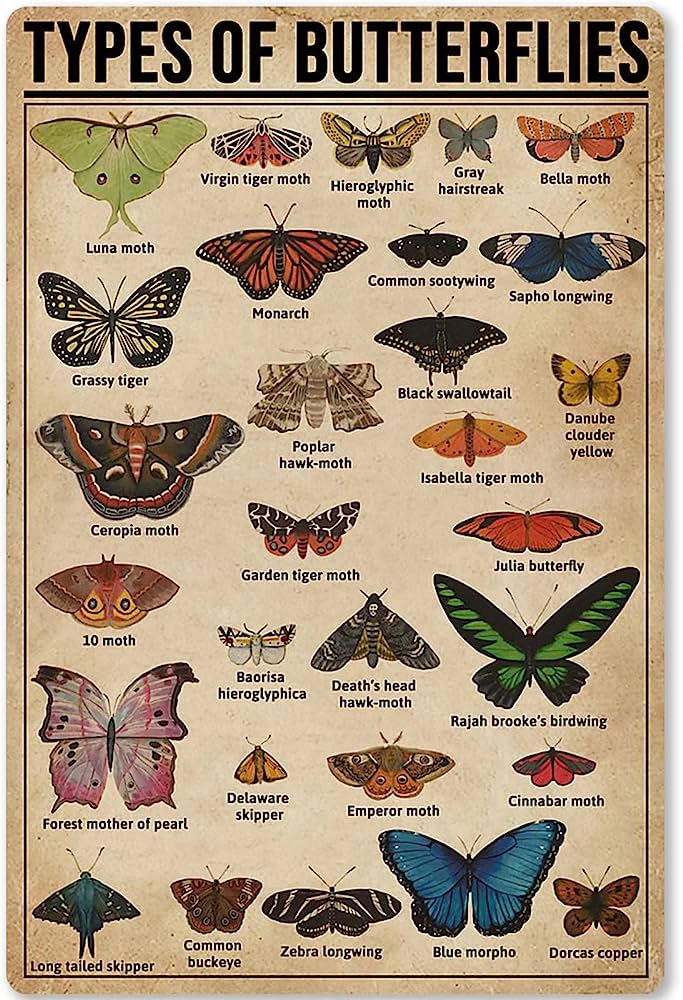

Gatos
Gatos
Los simios o monos son primates de la infraorden de los haplorrinos.
Su tamaño es muy variable, tienen los ojos situados en la parte frontal de la cara y
pulgares oponibles en las manos que les permiten trepar con facilidad a los árboles.
Gracias a la constitución de sus manos también son capaces de usar ciertas herramientas
para llevar a cabo algunas actividades de su vida diaria. Se conocen unas 260 especies
 diferentes: el babuino es el mano de mayor tamaño y el tití pigmeo el más pequeño. Son animales
mamíferos, de comportamiento sociable que en ocasiones puede convertirse en violento si se sienten
intimidados.
Algunos de los monos mas conocidos son:
diferentes: el babuino es el mano de mayor tamaño y el tití pigmeo el más pequeño. Son animales
mamíferos, de comportamiento sociable que en ocasiones puede convertirse en violento si se sienten
intimidados.
Algunos de los monos mas conocidos son:
Los lepidópteros, mas conocidos comúnmente como mariposas, son unos insectos pertenecientes al orden de los homometábolos, un grupo de insectos superiores, los cuales, a lo largo de su vida sufren una serie de transformaciones complejas conocida como metamorfosis, y en la que se suceden las fases de embrión, larva, pupa e imago. Las mariposas son un tipo de insecto muy popular por los llamativos colores que tiñen sus alas y por su vuelo vacilante cuando se acerca el buen tiempo. Se han descrito unas 24.000 especies diferentes. Como todos los insectos cuentan con seis patas, dos alas y un cuerpo dividido en tres partes: cabeza, tórax y abdomen.Su boca tiene forma de tubo pues es la herramienta con la que succionan los nutrientes de las plantas para alimentarse a través de una larga lengua enrollada sobre si misma que recibe el nombre de espiritrompa. El único lugar en el mundo donde no se encuentran mariposas es en la Antártida. Algunas de las mas conocidas son: 
Los lepidópteros, mas conocidos comúnmente como mariposas, son unos insectos pertenecientes
al orden de los homometábolos, un grupo de insectos superiores, los cuales, a lo largo de su
vida sufren una serie de transformaciones complejas conocida como metamorfosis, y en la que
se suceden las fases de embrión, larva, pupa e imago.
Las mariposas son un tipo de insecto muy popular por los llamativos colores que tiñen sus alas
y por su vuelo vacilante cuando se acerca el buen tiempo. Se han descrito unas 24.000 especies
diferentes. Como todos los insectos cuentan con seis patas, dos alas y un cuerpo dividido en tres
partes: cabeza, tórax y abdomen.Su boca tiene forma de tubo pues es la herramienta con la que
succionan los nutrientes de las plantas para alimentarse a través de una larga lengua enrollada
sobre si misma que recibe el nombre de espiritrompa. El único lugar en el mundo donde no se
encuentran mariposas es en la Antártida.